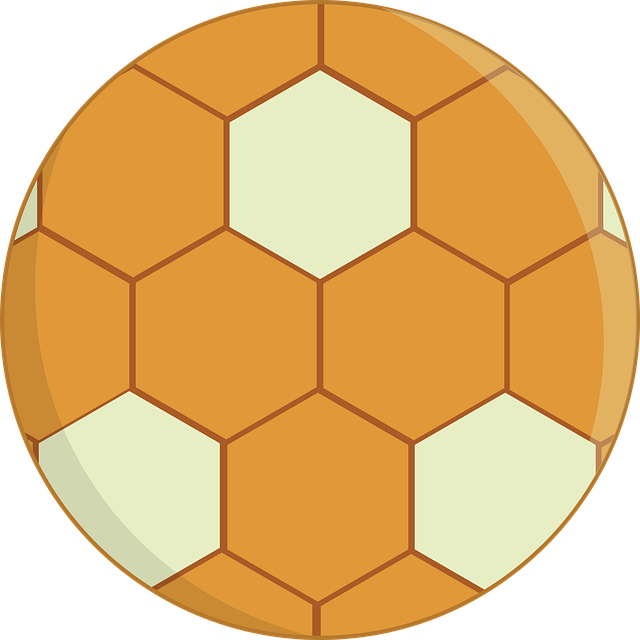

A kézilabda
A kézilabda egy labdajáték. A labdát csak kézzel szabad dobni, a kapus kivételével lábbal nem szabad hozzáérni. A csapat 16 játékosból áll, a játéktéren egy időben legfeljebb 7 játékos tartózkodhat. A többi játékos cserejátékos.
Az a csapat nyer, amelyik rendes játékidőben több gólt ér el. Ha mindkét csapat azonos számú gólt ér el, a játék döntetlen eredménnyel végződik. Abban az esetben ha továbbjutáshoz el kell dönteni a nyertest akkor 2x5 perces hosszabbítás következik. Ha ezután is döntetlen az eredmény akkor 7 méteres dobással döntik el, ki a nyertes. Egyes versenyeken a rendes játékidő letelte után egyből hétméteres dobások következnek, hosszabbítás nincs.
A kézilabdázás alapmozgásai:
- futás,
- ugrás,
- cselezés,
- dobás.
Története
Hozzávetőlegesen a századforduló környékén három, egymáshoz meglehetősen hasonló játék fejlődött ki. Az alábbi játékok a mai kézilabdázás közvetlen elődjeinek tekinthetőek:
- haandbold,
- torball,
- hazena.
A labda
A kézilabdát bőr vagy műanyag borítású labdával játsszák, életkortól és nemtől függően eltérő méretű labdákkal.
| Labdaméret | Korosztály | A labda kerülete (cm) | A labda tömege (g) |
|---|---|---|---|
| 1 | 8–14 év közötti leányok 8–12 év közötti fiúk | 50-52 | 290-330 |
| 2 | 14 év feletti nők 12–16 év közötti fiúk | 53-56 | 320-375 |
| 3 | 16 év feletti férfiak | 58-60 | 425-475 |
További információ a Kézilabda – Wikipédia oldalon.